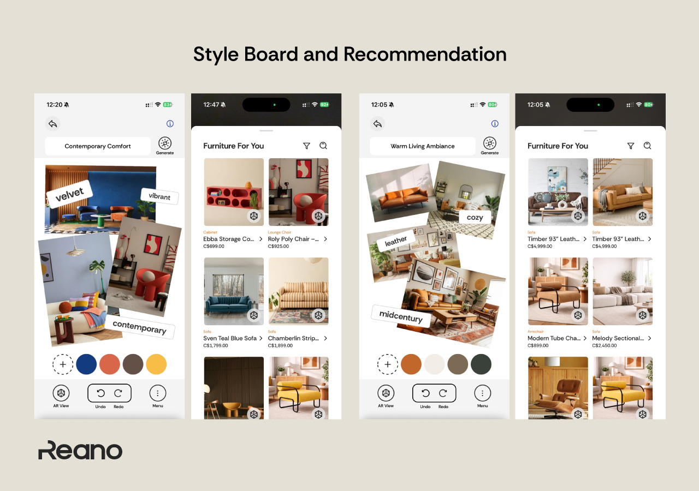

Problem
Everyone can find room inspiration on social media — but turning it into reality is a different story. Scattered ideas are hard to organize, existing tools assume design expertise, and visualizing how furniture will actually look in your space requires browsing multiple retailers, manual measuring, and a lot of guesswork. Products frequently disappoint on arrival, leading to costly returns and wasted time.
Solution
Smart Style Board AI extracts colour palettes, identifies design styles, and generates personalized furniture recommendations from the user's inspiration photos.
AR Room Visualizer Place, move, and rotate real-scale 3D furniture models in a live camera view to see exactly how pieces will look before buying.
Image Recolouring Virtually repaint walls and floors on any photo with AI-suggested palette colours aligned to the user's Style Board.
My Contributions
As Co-Project Lead & Product Planner: Led overall project drive and product planning from kick-off through final presentation. Owned feature scoping, milestone planning, and cross-team alignment between 4 developers and 7 designers across a 12-week timeline.
- Shaped the core product vision — translating user research, competitive analysis, and persona insights into a focused MVP that balanced technical feasibility with user value. Designed intuitive flows and AI-assisted styling suggestions to serve users with no design background, alongside a freemium business model that keeps core features free while monetizing through affiliate commissions and premium subscriptions.
- Facilitated collaborative workshops to align user stories, user flows, and data model decisions across design and development streams.
- Drove sprint planning and progress reporting, coordinating deliverables between ClickUp tasks, design handovers, and backend readiness gates.
As Full-Stack Developer: Owned the Style Board recommendation pipeline and furniture listing features — the core AI-powered path from inspiration to product discovery.
- Implemented the furniture recommendation system using OpenAI's text-embedding-3-small model. Each furniture item is described in natural language and converted into a vector embedding stored in the database. Style Board creation triggers a background job that ranks catalogue items by cosine similarity, serving the top results on demand.
- Built a custom React Native hook that polls for recommendations while the background job completes, withholding render until results are stable to prevent visible list reordering.
- Contributed to the furniture listing and filtering UI.

Impact
Delivered a fully functional cross-platform MVP (iOS & Android) within the 12-week capstone timeline. Reano demonstrates end-to-end ownership from product strategy and feature design through to a shipped, testable application.
The AI-driven recommendation pipeline and AR visualization features directly address the core user pain point — turning fragmented inspiration into confident, spatial purchasing decisions — reducing the cognitive load of cross-retailer browsing and "will this actually fit?" uncertainty.